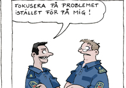

Många har råkat ut för härskartekniker, till exempel att på ett subtilt sätt bli osynliggjord av någon annan. Då gäller det att vara medveten om vad som händer och ha verktyg för att bemöta det.
Någon pysslar med sin I-phone när du pratar, en annan inspekterar sina naglar. När du lämnar mötet känner du dig arg och negligerad, men också lite korkad.
Trots att känslan är subtil släpper den inte. Det är som om kollegernas märkliga beteende berodde på dig, som om det var du som var konstig eller hade gjort bort dig. I själva verket har du utsatts för en av många härskartekniker.

Härskartekniker utövas av både män och kvinnor i såväl yrkesmässiga som privata relationer. Men även om syftet alltid är detsamma - att förminska någon eller få denne att backa – behöver det inte röra sig om medvetna strategier. Härskaren kan i själva verket vara omedveten om sitt sätt, skriver Elaine Eksvärd i sin bok Härskarteknik, den fula vägen till makt (2011).
Uttrycket populariserades 1976 av den norska socialpsykologen Berit Ås, som definierade fem olika härskartekniker. Detta efter att ha studerat hur män kommunicerade med varandra under ett möte i syfte att utesluta henne som kvinna ur diskussionen. Sedan dess har antalet metoder ökat i takt med samhällsutvecklingen. Förr var majoriteten av cheferna män - i dag sitter även kvinnor vid rodret.
För att lyfta frågan inom polisen tog Jenny Sjökvist, HR-strateg på RPS, fram ett kort med fem listade motståndsstrategier, eller så kallade främjandetekniker. Dessa har bland annat använts på Polismyndigheten i Södermanlands län.
– Härskartekniker kan uppstå överallt där människor möts och interagerar. I sådana lägen kan det vara bra att ha några positiva tekniker med sig. Att bli medveten om både härskar- och främjandetekniker kan också hjälpa en att få syn på saker man gör själv, ibland kanske utan att tänka på det, berättar hon.
Inger Gunnarsson på HR i Södermanland minns att korten fick många att börja samtala om ämnet.
– Jag tror att polisen under de fem senaste åren har blivit mer mottaglig och öppen för den här typen av diskussioner, säger hon.
5 främjandetekniker
1. Synliggörande
Märker du att någon blir avbruten ofta kan du bolla tillbaka frågan till personen som blev avbruten med ett enkelt ”du ville säga..?”. Du kan även låta bli att erkänna avbrottet och fortsätta se på personen som pratade före avbrottet. Genom att själv vara noggrann med att synliggöra alla sätter du standarden för gruppen.
2. Respekt
Blir någon måltavla för förlöjligande skämt och förminskande kommentarer finns flera praktiska tips. Ett av dem är att aldrig skratta med. Även om du väljer att inte kritisera skämtet kan det räcka att inte skratta för att bryta en negativt laddad jargong. En annan teknik är att be personen förklara skämtet. Genom att inte förstå visar du på andra normer och perspektiv.
3. Uttala vad som händer
Att påtala att en härskarteknik används kan vara ett effektivt motstånd. Många härskartekniker fungerar bäst så länge de är outtalade och subtila. När de påpekas blir de svårare att upprätthålla.
4. Bekräftelse
Motsatsen till att få någon att känna skuld och skam är att ge bekräftelse och stöd. Var mottaglig för människor som ber om hjälp eller som faktiskt säger att de har för mycket att göra. Ingen vinner på att människor tar på sig för mycket eller inte törs berätta när de inte förstår.
5. Framhållande av information
Sträva efter att alla i gruppen ska ha samma förutsättningar att bidra. Berätta bakgrunden till frågor om du tror att någon i gruppen inte har samma bakgrundsinformation, eller inte har varit med från början i arbetet. På så sätt får hela gruppen en gemensam bild av vad frågorna handlar om. Om du har fortsatt att diskutera en fråga med några i gruppen efter mötet – skicka iväg ett mail till de andra och berätta om vilka tankar som finns. På så sätt kan alla vara med i diskussioner mellan möten.